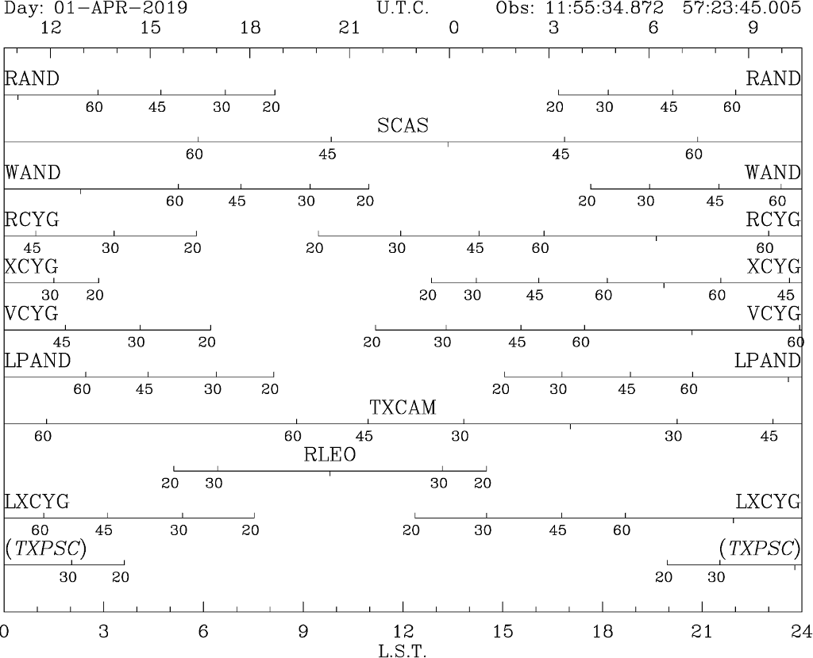

Observation planning with gildas
Wed 06 February 2019 by Luis Velilla PrietoContext/Motivation
- Create visibility plots to plan your observations
- Obtain good quality plots to be enclosed in your proposals
Known tools:
- ASTRO from the GILDAS package
- ASTROPLAN from ASTROPY (not covered here)
The best starting points for GILDAS tutorials are
- specific GILDAS tutorials
- upcoming and past IRAM’s events (select the specific school and check the scientific program of that school for some PDFs)
- IRAM’s latest interferometry school
GILDAS is much more than ASTRO:
- It is very flexible, robust, and it is FORTRAN-based (it has also PYTHON linking). You can make fancy things like for loops, if-else statements, statistical analysis, line identification, LTE modelling, high-quality plots, FFT analysis, data handling (single-dish, interferometry)...
- Some tasks are not so well documented and advanced functions may have a steeper learning curve
Prepare a source catalogue
Save your targets in a file, e.g. mycat.sou.
!Catalog of sources:
!Source Coord Sys RA(h,m,s) Dec(deg) Vel_id Vel_value Flux Val_Jy Index Project
RAND EQ 2000 00:24:01.9473999328 +38:34:37.326131071 LSR 000
SCAS EQ 2000 01:19:41.9752833334 +72:36:40.857560507 LSR 000
Prepare script
Save the following code in e.g. @myscript.astro
help astro\ ! brief description of all the tasks. Use help task
set font duplex ! improve the quality of the characters in the plot
observatory APEX ! select your favourite observatory
observatory 11:55:34.8719 +57:23:45.0046 0.022758 ! longitude latitude elevation
frame horizontal ! Reference frame: horizontal or equatorial
time 00:00 01-APR-2019 ! Define the time of the observation
catalog mycat.sou ! Open the catalogue
horizon 20 30 45 60 /source ! Plot the LST ranges above the specified elevations
hard myimage.eps /device eps color ! Save your plot into a file (PS/EPS/PDF/PNG)
and run in ASTRO via @myscript.astro, which will produce a plot like the following:
